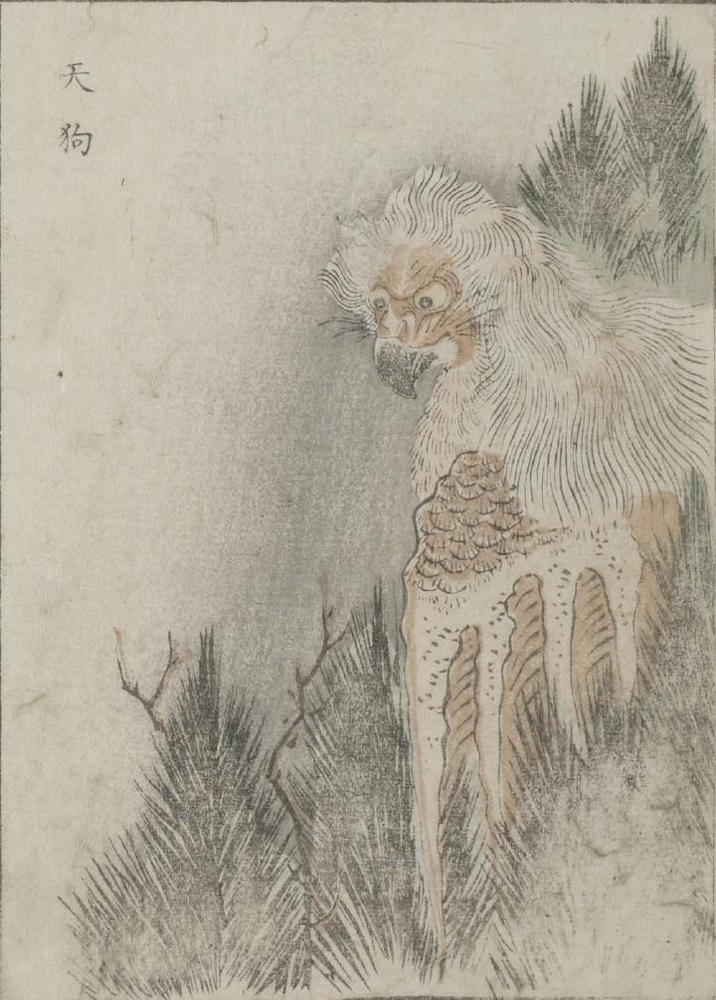

天狗；テング，鳥；トリ

杉の木に天狗がいる。猛禽類のような嘴と翼を持ち、体は羽毛に覆われている。
出典：親書誌：U426_nichibunken_0051：怪物画本；カイブツエホン／日付：2006／資源識別子：U426_nichibunken_0051_0020_0000
Copyright (c)2010- International Research Center for Japanese Studies, Kyoto, Japan. All rights reserved.